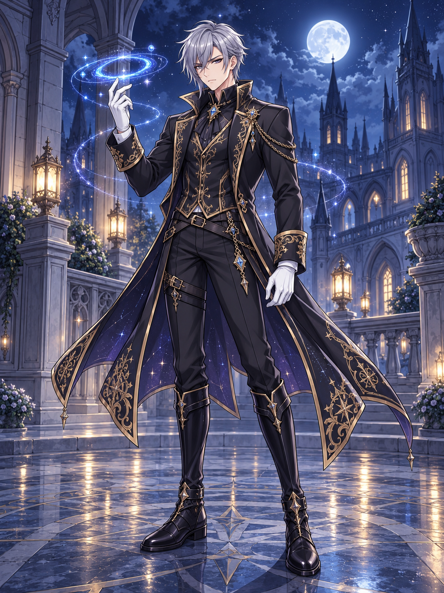

西幻暗黑权谋
多元宇宙至高主宰
诸天唯八后宫
100% 甜爽大圆满
穿成公爵府两岁幼子
反手执掌多元因果律！
蓝星孤儿穿越异界，开局竟是冷血母亲灌下的淬毒圣水与教廷死局？两岁潜伏伪装提线木偶，六岁献沉香木偶破万年死咒，十二岁虚空拐父！待神魔降临之日，奥尔多斯携手八位绝色妻子，相视一笑，打响终焉之指！
20万+
全本精修字数
17 章
全卷含官方后日谈
8 位
创世法则神明娇妻
13 张
高精全身体立绘

ONLINE NOVEL READER
沉浸式小说阅读器
全五卷十六正章 + 官方独家番外后日谈 · 支持多端自适应与个性化排版
CHARACTERS & PORTRAITS
全人物角色图鉴与立绘
包含全书 13 位核心人物高清全身体立绘、详细数值面板、三围身形与人物小传
EPILOGUE TIME LEAP
十年后穿越而来的“未来九子”
被卡奥斯的“七彩斑斓虚无弹”炸穿时空长河、集体空降公爵府草坪的九个熊孩子（6~10岁）
HARMONIOUS HAREM LAWS
四周循环排期表互动系统
经过奥尔多斯与八位妻子精密推演的四维和谐排期法则，达成100%全员幸福指数
CINEMATIC STORYBOARDS
全书13大名场面CG分镜
包含全五卷高光名场面与后日谈大团圆分镜设计，采用角色参考图（Reference Image）模式精确构筑
WORLD ARCHITECTURE
世界观与创世法则设定集
多元宇宙至高秩序、阿斯特雷亚公爵府铁律与诸天神性阶梯
🌌 八大原初创世本源
- 空间之弦：奥尔多斯本命法则，无视距离置换与多维掌控
- 神圣救赎：正妻莉莉丝执掌，净化一切污秽与破晓守护
- 深渊寂灭：二夫人卡娅莉丝执掌，万物枯朽与绝对毁灭
- 皇道守护：三夫人艾莉西亚执掌，人皇血脉与时空守护
- 真龙伟力：四夫人伊琳娜执掌，太古肉身极致与物质支配
- 生命繁衍：五夫人西尔维娅执掌，世界树生命之泉与万物复苏
- 混沌归墟：六夫人厄里斯执掌，原初概念泯灭与虚无同化
- 文明造物：七夫人林夏执掌，科技维度跨越与概念构造
- 至高因果：八夫人奥尔黛丝执掌，因果律双生闭环
🛡️ 公爵府防绿四条铁律
- 第一条【绝对专一律】：单人专属陪伴日内，任何其他妻子不得以“偶遇”、“送夜宵”闯入主卧。
- 第二条【自由约会律】：第二周四对妻子自由配对，奥尔多斯悠闲喝茶观战。
- 第三条【双生合璧律】：第三周奥尔多斯与奥尔黛丝携手陪伴七位妻子，双倍恩宠。
- 第四条【创世度假律】：第四周为双生主宰专属蜜月期，万界海滩享受无熊孩子宁静。
⚡ 境界与战力天梯
- 凡俗极限 (1~10)：普通成年人类均值约为 10。两岁奥尔多斯精神即达 18.5。
- 高阶超凡 (100~300)：如铁血主母克莱尔（暗影大法师，精神 220）。
- 传奇圣域 (400~800)：如北境孤狼雷恩公爵、暗影之王修尔（敏捷 850）。
- 真神本源 (800~1500)：八位神明妻子执掌法则本源（莉莉丝、卡娅莉丝、伊琳娜等）。
- 多元主宰 (99999+)：奥尔多斯与奥尔黛丝，全知全能，轻打响指即可重构万象时空。
VOICE SYNTHESIS & SYSTEM SETTINGS
⚙️ 手机与系统语音朗读设置
列出本机全部发音人完整列表 · 支持即时试听、语速与音调调节 · 保存后全书朗读自动生效
当前朗读声线：👑 奥尔多斯·沉稳男声
发音引擎: 系统智能优选 ｜ 语言代码: zh-CN ｜ 语速: 1.0x ｜ 音调: 1.0
🎛️ 试听控制台与参数调节
测试当前选中发音人的音色与语感，调整满意后点击保存
快捷小说台词：
📋 本机全部发音人完整列表
扫描发音引擎中...列出当前手机/电脑浏览器与操作系统已安装的全部语音。点击任意声线卡片的「▶ 试听」按钮可直接播放试听，点击「✓ 选择」后点击上方「💾 保存并应用声线」即可在阅读小说时使用该声音朗读。
正在获取手机系统与浏览器发音人列表...
📱
手机端如何获取更多高质量高保真中文声线？
🍎 苹果 iPhone (iOS) 用户：
进入手机【设置】➜【辅助功能】➜【朗读内容】➜【声音】➜【中文】，免费下载「普通话 - 婷婷 (增强/自然)」或 Siri 语音包，返回本页刷新即可在此列表中选用！
🤖 安卓 Android 手机用户：
进入手机【设置】➜ 搜索【文字转语音】或【TTS】➜ 选择【Google 语音服务】或厂商自带引擎，下载中文离线语音包。推荐使用移动版 Chrome 或 Edge 畅享超高清发音效果！